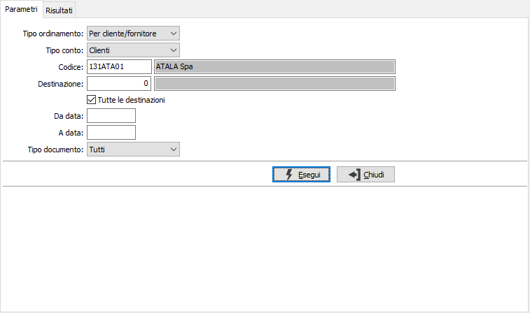
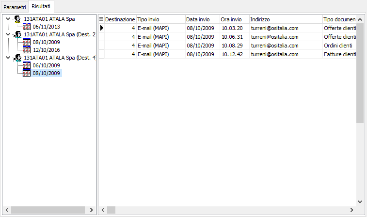

Analisi documenti inviati
Il programma effettua la visualizzazione e l'eventuale stampa dei documenti inviati in base ai parametri inseriti dall’utente.
E’ possibile visualizzare i dati relativi ad una specifica tipologia di documenti, ad una singola destinazione o provenienza, ad un singolo cliente/fornitore entro limiti di data specificati; è possibile effettuare l'analisi per cliente/fornitore oppure per data invio.
Il programma si articola su due finestre video. La prima, Parametri, consente la definizione dei parametri di analisi.

TIPO ORDINAMENTO: definisce il tipo di ordinamento dell'analisi: per cliente/fornitore, per data invio.
TIPO CONTO: indica se analizzare i clienti oppure i fornitori.
CODICE: codice del cliente o del fornitore in relazione al parametro precedente, presente in anagrafica, per cui si vuole effettuare la selezione di analisi. Sul campo sono attive le funzioni di ricerca (F9).
DESTINAZIONE: eventuale destinazione diversa del cliente, o provenienza del fornitore, per cui si vuole effettuare la selezione di analisi. Sul campo sono attive le funzioni di ricerca (F9).
TUTTE LE DESTINAZIONI: indica di analizzare tutte le destinazioni presenti per i clienti, o provenienze per i fornitori (casella con segno di spunta). Il campo è attivo solo per destinazioni zero (nessuna destinazione).
DA DATA: eventuale data, relativa all'invio dei documenti, da cui deve iniziare l’analisi relativamente ai precedenti parametri di selezione. Confermando a vuoto, l’analisi inizia con il primo invio valido.
A DATA: eventuale data, relativa all'invio dei documenti, con cui si desidera terminare l’analisi relativamente ai precedenti parametri di selezione. Confermando a vuoto, l’analisi si conclude con l'ultimo invio valido.
TIPO DOCUMENTO: definisce il tipo di documento per cui effettuare l'analisi: Tutti, Offerte, Ordini, Packing, DDT, Fatture, Parcelle, Ordini, Ordini terzisti, DDT terzisti, Solleciti clienti, Estratto conto, richieste di offerta, autocertificazione appalti.
Confermando tramite pressione del bottone Esegui, viene avviata la selezione e richiamata la finestra video Risultati.

La finestra video è articolata su due sezioni: la sezione laterale elenca in gruppi, in base al criterio di ordinamento scelto, clienti/fornitori o date di invio; posizionandosi su di un singolo gruppo vengono visualizzati nella parte di destra i singoli invii. Nella parte sinistra è disponibile un menù contestuale (tasto destro del mouse) che consente l'espansione o la compattazione dei gruppi; nella parte destra facendo doppio clic sul rigo dell'invio si accede direttamente alla manutenzione del documento. Nel caso di destinazione o provenienza accanto alla denominazione del cliente/fornitore è indicato il codice della destinazione o provenienza.
Utilizzando i tasti Anteprima o Stampa della toolbar è possibile effettuare la stampa; in base al criterio di ordinamento sarà richiesto se stampare il dettaglio relativo al sottogruppo.